日向山
| 日付 | 2012年12月23日（日） |
|---|---|
| 山域 | 丹沢 |
| メンバー | 家族（妻、長女・1歳） |
| 山行形態 | 子連れ日帰り |
| アクセス | 車 |
| ルート (Map) | 日向薬師 (9:25) - (10:22) 日向山 (10:52) - (11:14) 日向薬師 |
前々回の白山に引き続き、今回も子供を山で歩かせてみることにする。
今回は白山の少し南にある丹沢の日向山だ。
こちらの山も登り30分のお手軽山行で、子供の足にはちょうど良い。
日向山のおひざ元にある日向薬師の駐車場に車を停める。標高240m。
山登りを始める前に日向薬師にお参りすることにする。
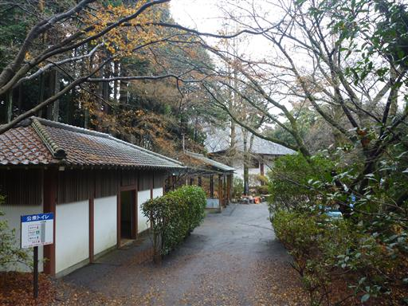
残念ながら本堂は大修理中で中を拝むことはできない。
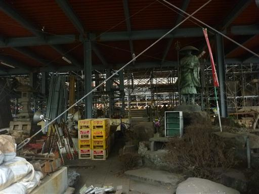
寒そうな池には金魚（？）がたくさん泳いでいる。
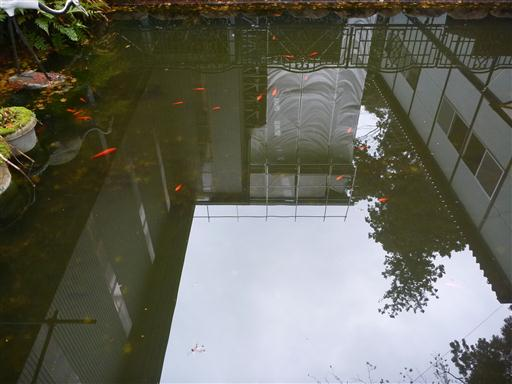
木の幹の穴の中に虚空蔵菩薩像が祀られている。
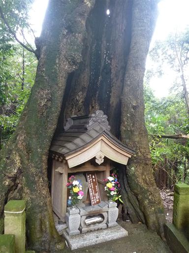
駐車場に戻って日向山への登山道に入っていく。
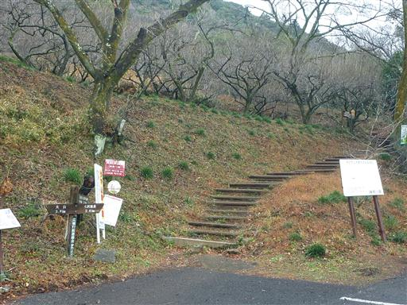
この辺りは梅林が広がっている。梅の花が咲くのはまだまだ先だ。
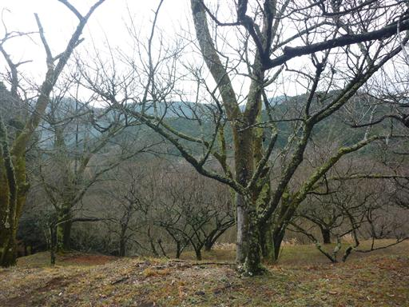
手をつないで山道を登っていく。
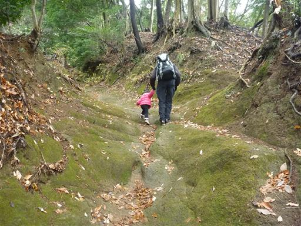
歩くのに慣れてきたら、手を振りほどいて一人で歩き始める。
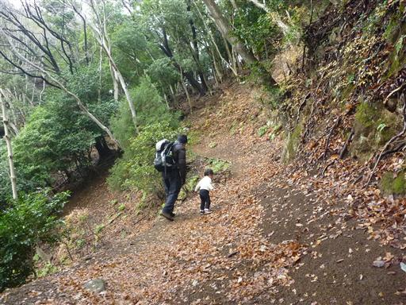
標高が低く難易度も低い山なのだが、子供にとっては危険な場所があちらこちらにある。
なかなか気を抜けない。
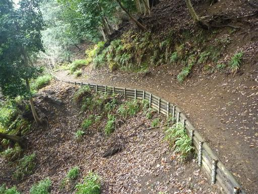
階段も元気に登っていく。頑張ってはいたが、8割ほど進んだところで抱っこをせがまれる。
1歳9か月でコースタイム30分の登りはまだ無理なようだ。
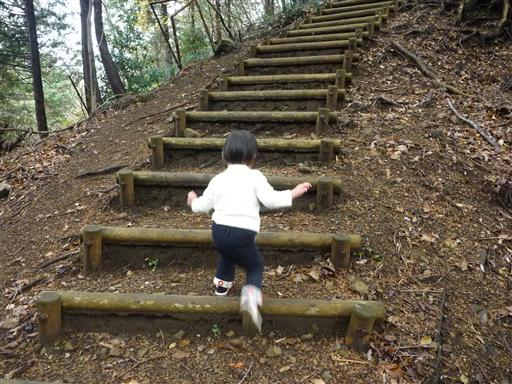
最後は抱っこして日向山山頂に到着する。標高404m。
小さな祠が祀られている。山頂で出会った人に干し柿を頂く。
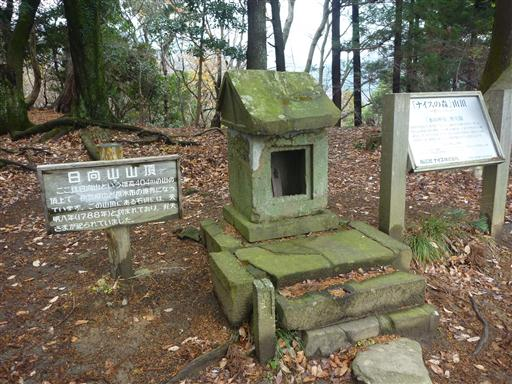
山頂からの展望はあまり良くない。東の方に町がわずかに見えるのみだ。
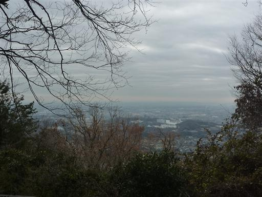
下りはずっと抱っこ。白山の時より成長は見られたが、
それでもコースタイム20分程度が限界のようだ。
子供の成長は早いので、次に山に行くときはもっと歩けるようになっているだろう。
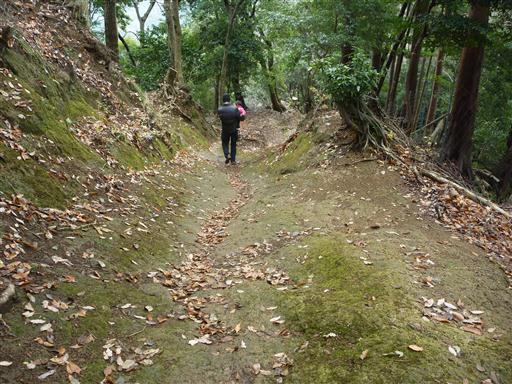